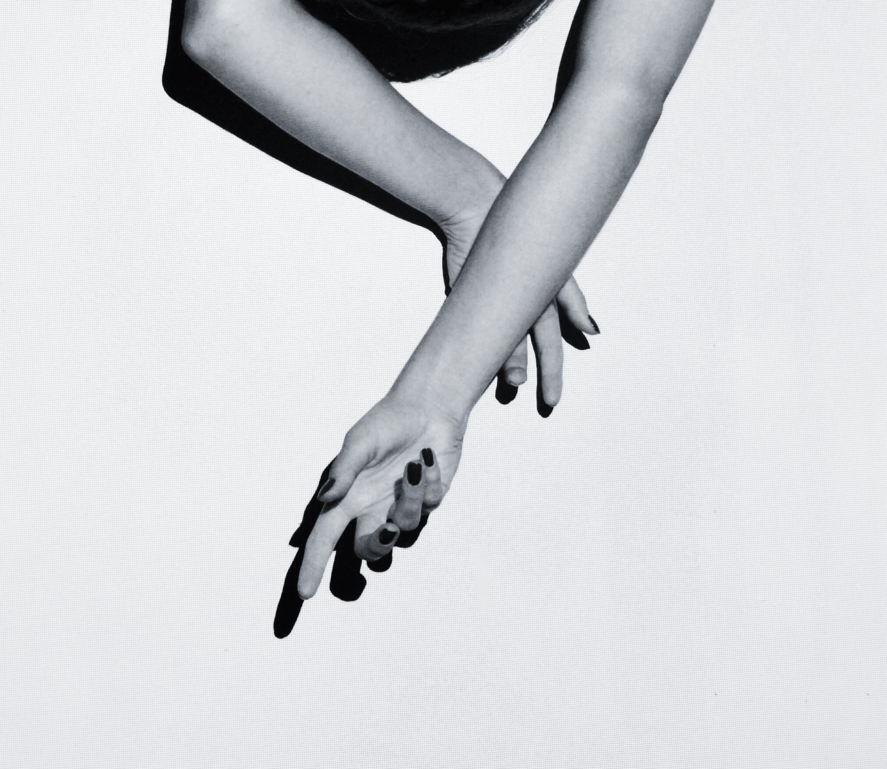

ABOUT

My name is Megan Krause, and
I work primarily with portraits and self-portraiture.
I'm also very into reading, painting,
and sleeping. If I had to choose between jumping out
of an airplane and walking through the city
barefoot, I would most definitely fling myself from the aircraft.
With that said, I once lost my flip-flop in the rain
in the middle of a crosswalk and had to continue
on without it.
I also lost my pie that was
in a brown bag, but that's a whole
different story. This story is relevant because
on that walk home, I was trying to distract
myself from my situation, and landed on the following thought:
There is an importance in connecting
fully with the subject, and one should aim to do that every time they
pick up a camera. Without that spark,
it's just an image. But if you hit the high note and really break through
those barriers, it's more than just an image
it's a feeling and an experience.
Anyways, I hope you enjoy looking around
and thanks for clicking.